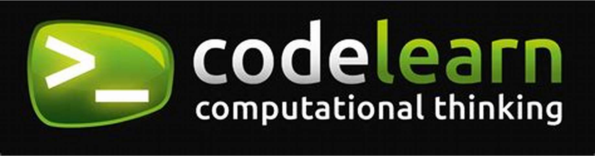

En aquest apartat podràs veure l'experiència laboral
que tinc en les diferents empreses que m'han contractat per a realitzar les practiques.
Ara mateix estic en aquesta empresa "CodeLearn".
Aquesta empresa és una extraescolar la qual es dedica a l'ensenyament de
diferents llenguatges de programació a niñ@s d'entre 7 a 18 anys, apart, també ensenyen mecanografia, Java, Linux i més.